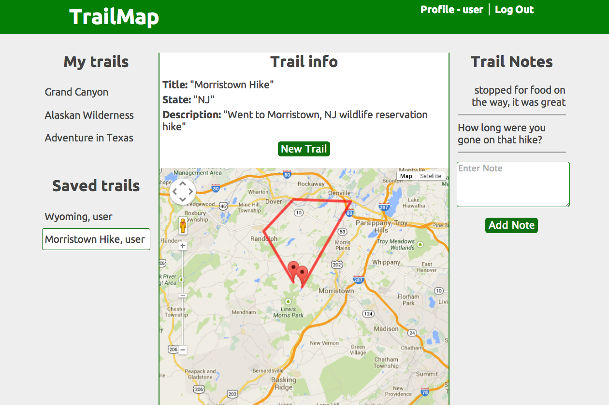
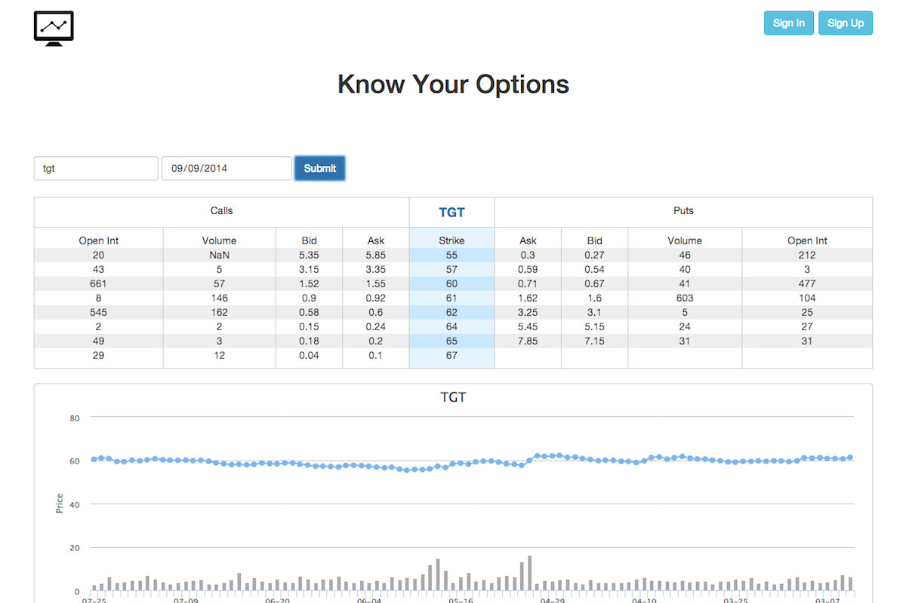

</ 𝕎𝕙𝕒𝕥 𝕀 𝕨𝕠𝕣𝕜𝕖𝕕 𝕠𝕟 >

Not Alone aims to narrow the gap between older and yonger generations by bringing together people who often struggle with technology and those who are willing to help. Built with Ruby on Rails and Twilio API.

Tired of the same old hiking trail? Trail Map allows users to effortlessly connect with each other to discover and share trails submitted by other hikers, just like you! Built as a team project using Ruby on Rails and Google Maps API

Optionizr delivers stock data such as price chart and option chain with simple unobstructive design in mind. Because it's all about numbers. Built using Ruby on Rails, Yahoo Finance API, Quandl API and Bootstrap